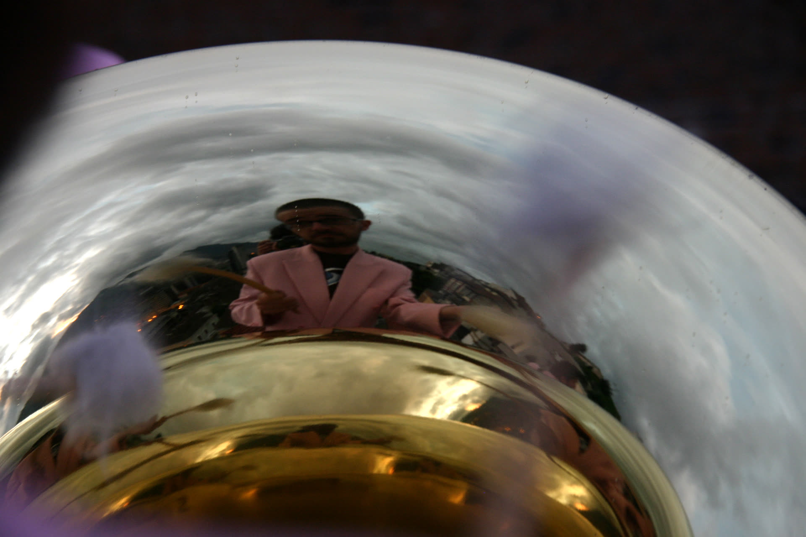

Barbie Express
Album Quito Pluto
Écouter l'album : Spotify · YouTube Music · Deezer
01Sueño Tropical5:35
2006 — Musique : Sven Pagot et David Bonilla — Paroles (batterie, chœurs) : Rolland Auda
02Rêve tropical2:26
2018, Josep, Carcassonne

Album Quito Pluto
Écouter l'album : Spotify · YouTube Music · Deezer
2006 — Musique : Sven Pagot et David Bonilla — Paroles (batterie, chœurs) : Rolland Auda
2018, Josep, Carcassonne